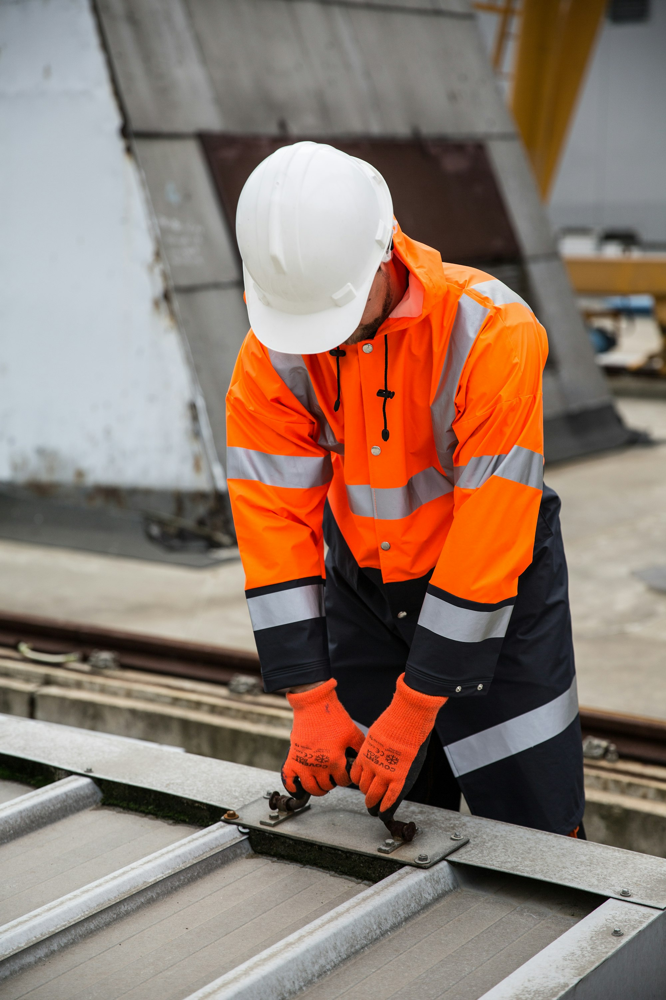
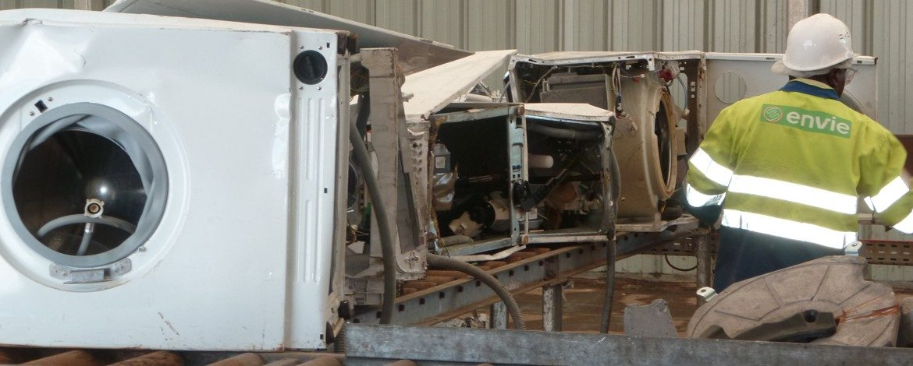

L'exigencese mesure.
Climat, sécurité, qualité, social, conformité : des engagements chiffrés, audités et publiés chaque année. Tout le monde est formé et habilité, sur tous les sites, dans les dix-sept pays.
Une matière recyclée estune matière qui n'est pas extraite.
Le métier de Derichebourg est, par nature, une activité d'atténuation du changement climatique : 80,8 % du chiffre d'affaires est aligné sur la taxonomie européenne.
Ce que le métal recyclé économise
Énergie et CO₂ évités par rapport au métal issu du minerai (analyse de cycle de vie FEDEREC 2023).
Trajectoire des émissions évitées
L'indicateur suit les volumes traités : plus le groupe recycle, plus il évite.
Zéro accident :l'objectif, pas le slogan.
Une politique sécurité commune signée par la direction générale, des systèmes de management ISO 45001 déployés site après site, et un indicateur publié chaque année : le taux de fréquence des accidents.
− 20 % en six ans. Points intermédiaires 2021 et 2023 indicatifs, à compléter avec les DEU correspondants.
Une politique sécurité groupe signée par la direction générale, déclinée sur chaque site, avec l'objectif zéro accident.
137 700 heures de formation, dont plus de 59 000 dédiées à la sécurité, au dernier chiffre groupe publié (2019). Chiffre 2025 à actualiser.
ISO 9001 (qualité), ISO 14001 (environnement) et ISO 45001 (santé-sécurité) déployés progressivement ; 14 chantiers Ecore certifiés 14001 et 17 certifiés 9001 à l'acquisition.
Des métiers réglementés, donc des habilitations partout
Le recyclage des métaux est une activité sous contrôle permanent. C'est en soi un argument de professionnalisme.
Chaque site est une installation classée pour la protection de l'environnement, sous arrêté préfectoral et inspection.
Agrément préfectoral pour la dépollution et le démontage des véhicules hors d'usage.
Traitement des DEEE et des autres filières sous contrat avec les éco-organismes.
Pelles, chargeuses, grappins, chariots : certificats d'aptitude obligatoires pour chaque conducteur.
Interventions sur installations électriques et lignes de traitement des DEEE.
Attestations de capacité pour la récupération des fluides sur les lignes frigos et chauffe-eau.
Dépollution VHU, batteries, huiles : manipulation et transport sous réglementation.
Qualité, environnement, santé-sécurité : taux de sites certifiés à publier avec le client.
Premier état de durabilité CSRD publié en décembre 2025, plan de vigilance publié.
Un groupe coté,familial, transparent.
La solidité d'un groupe qui publie tout : comptes audités, information réglementée, état de durabilité, plan de vigilance. Et la constance d'un actionnaire familial qui raisonne à trente ans.
Dette nette ramenée à 683 M€, 415 M€ de liquidités disponibles.
Comptes audités par Ernst & Young, Denjean & Associés et BM&A.
du chiffre d'affaires aligné sur l'atténuation du changement climatique. Premier exercice CSRD bouclé et audité.
par action, versé chaque année. Actionnaire familial de contrôle depuis 1996.
Publiés et accessibles : devoir de vigilance sur la chaîne de valeur, lutte contre la corruption, protection des lanceurs d'alerte, sécurité des systèmes d'information renforcée depuis 2023.
 Acier recyclé · matière aux spécifications
Acier recyclé · matière aux spécifications
Des emplois verts,ancrés localement.
8 800 collaborateurs dans 17 pays, sur des sites industriels et périurbains impossibles à délocaliser. Des métiers qui s'apprennent, des parcours qui insèrent.
Partenariat historique avec l'économie sociale et solidaire : une centaine de personnes formées et insérées chaque année, avec des embauches régulières à l'issue des parcours.
Programme de recrutement et de formation de jeunes diplômés aux métiers du recyclage.
Actions auprès des collégiens, lycéens et étudiants : faire connaître des métiers d'avenir.

Ligne DEEE · partenariat Envie